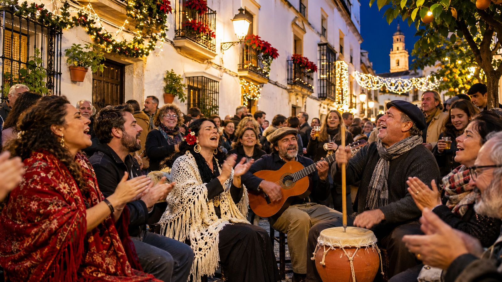
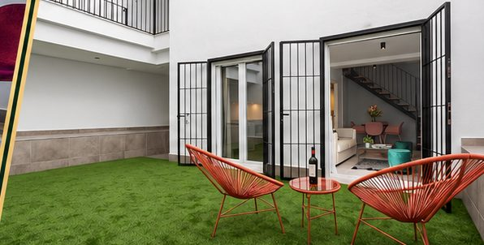

Vive la zambomba: la Navidad más cálida de Andalucía está en Jerez
Hay ciudades que se visitan y ciudades que se viven. En diciembre, Jerez abre sus patios, sus plazas y sus peñas, y te recibe como a un vecino más. Si nunca has estado en una zambomba, este es tu año.

¿Qué es una zambomba?
Imagina un patio de vecinos, una candela, una mesa con anís y pestiños, y alguien que empieza a cantar un villancico… por bulerías. Enseguida se suman las palmas, la zambomba (el instrumento que le da nombre), la guitarra y las voces de todos. Eso es una zambomba: una reunión popular donde la Navidad se canta y se baila en clave flamenca.
Nació en los patios de vecinos de los barrios jerezanos, como Santiago y San Miguel, cuna de grandes artistas flamencos, y hoy es una tradición reconocida como Bien de Interés Cultural. Lo mejor: sigue siendo de la gente. Aquí nadie es espectador.
Cómo vivirla como un jerezano
- Ven en fin de semana de diciembre. Las zambombas se concentran en los fines de semana previos a Navidad, por la tarde y por la noche. Consulta la programación del Ayuntamiento y de las peñas flamencas antes de venir.
- Piérdete por el centro. Patios, plazas, bodegas y peñas organizan sus propias zambombas. Muchas son de entrada libre; algunas, en bodegas o tabancos, requieren reserva.
- Prueba lo de aquí. Pestiños, buñuelos, anís, una copa de fino o de oloroso y tapas en los bares de toda la vida.
- Déjate llevar. Saluda, pregunta, aprende el estribillo. El jerezano es hospitalario y le encanta compartir su fiesta.
- Reserva pronto el alojamiento. Diciembre es una de las épocas con más demanda del año en el centro.
Dónde alojarte: en pleno barrio de San Miguel
Si quieres vivir la zambomba de verdad, lo mejor es dormir en el centro y moverte a pie. Te recomendamos un sitio que conocemos muy bien:

Apartamentos Galván 9
8 apartamentos con patio privado en el barrio flamenco de San Miguel, a un paseo de las zambombas, la Catedral y las bodegas. En Aurea Sherry acompañamos la rehabilitación de este edificio y su venta; hoy los gestiona Smart Rent.
Ver disponibilidad en Booking →Y de paso, mira la ciudad con otros ojos
Mucha gente que llega a Jerez por la Feria, el Gran Premio o la zambomba acaba haciéndose la misma pregunta: ¿y si viviera aquí? No es casualidad. Una ciudad con patrimonio, buena mesa, cultura todo el año, la playa a un paso y una vida de barrio que se mantiene viva.
Si es tu caso, aprovecha el viaje: pasea por el centro, fíjate en los edificios que se están rehabilitando y ven a tomar un café con nosotros. Te contaremos, con datos reales, cómo está el mercado y qué tiene sentido y qué no. Sin compromiso, y con la sinceridad de siempre.
¿Vienes a la zambomba? Tómate un café con nosotros
Escríbenos antes de tu visita y te enseñamos Jerez desde dentro: barrios, precios reales y las oportunidades que de verdad merecen la pena.
Consulta la programación oficial de la Navidad y las zambombas en la web del Ayuntamiento de Jerez. La disponibilidad y los precios de los apartamentos Galván 9 dependen de su gestor, Smart Rent; Aurea Sherry no gestiona las reservas.